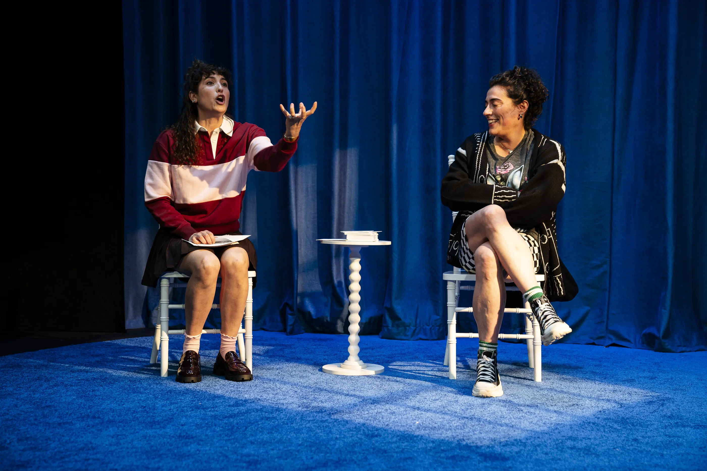
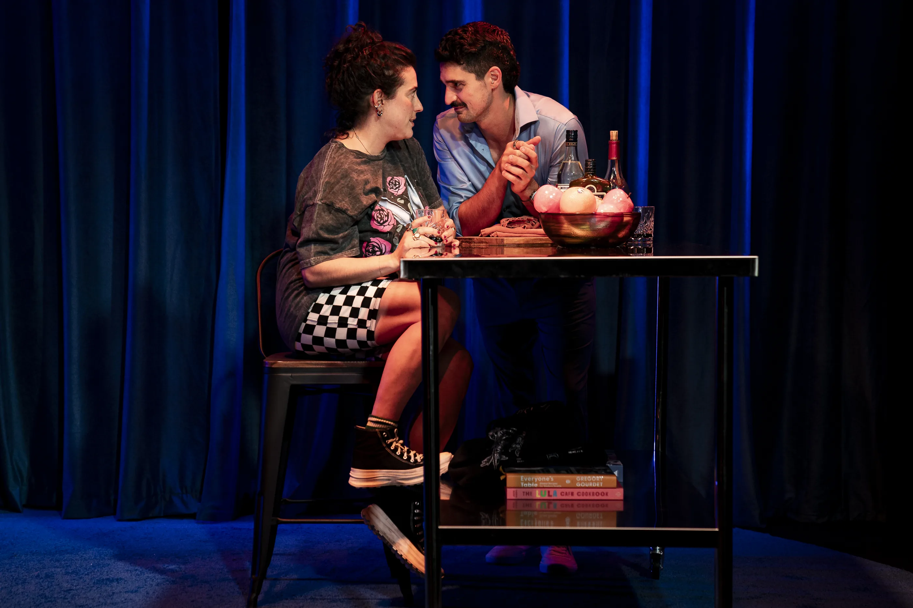
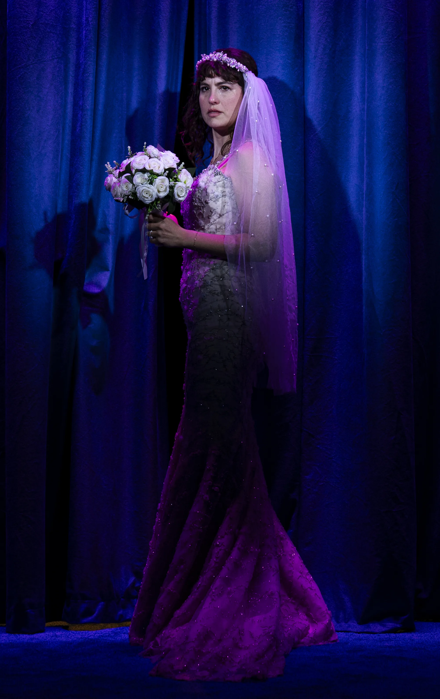
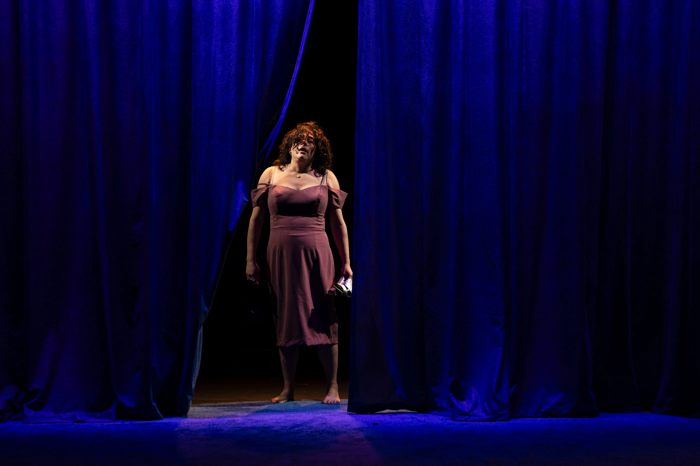
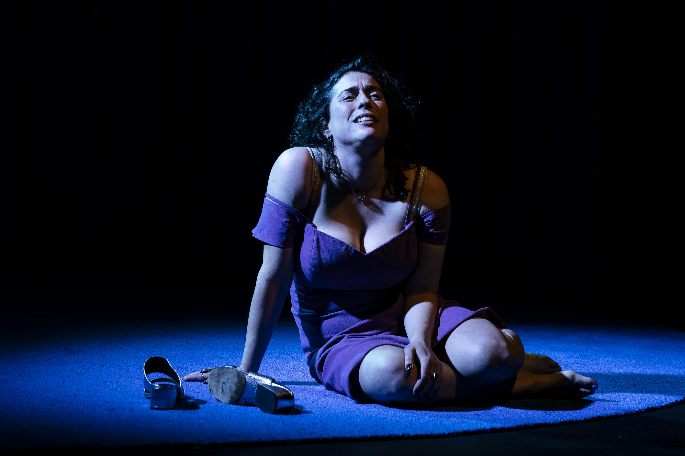
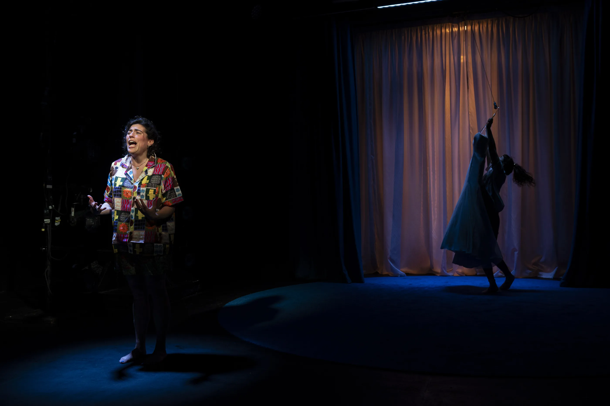
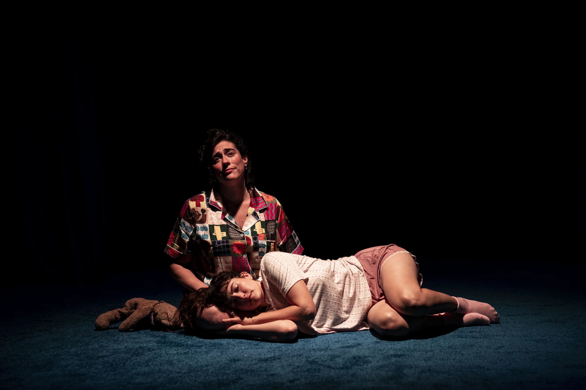
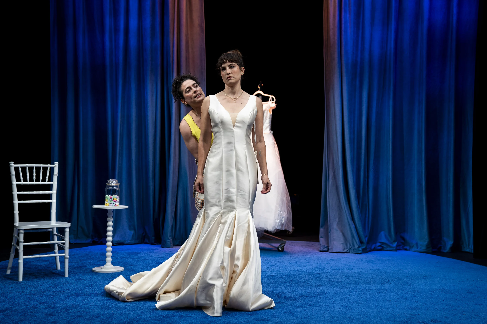
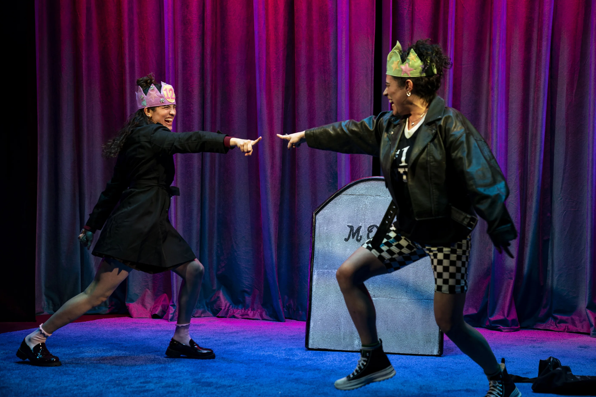

★ Production 01
To Have and to Hold
Now Playing Off-Broadway
August 21 – September 12, 2026
“Lapidus and Sardarov make these lines crackle with flirtatious electricity.”
TheaterManiaZachary StewartRead the review









★ The Company ★
To Have and to Hold
by Laura Lapidus
- Kate
- Laura Lapidus
- Bianca
- Tedra Millan
- Peter
- Yuriy Sardarov
- Producer
- Lily Jack Productions
- Lead Producer
- Josh Altman
- Executive Producer
- Adam Rodner
- Scenic
- Se Hyun Oh
- Costumes
- Mieka van der Ploeg
- Lighting
- Yang Yu
- Sound
- Liam Bellman-Sharpe
- Production Management
- Sean McGrath
- Production Stage Manager
- Cello Barnes
- Assistant Director
- Riley Cerabona